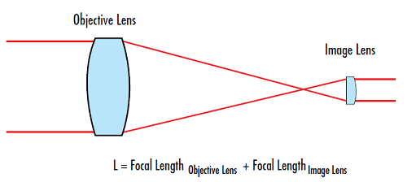
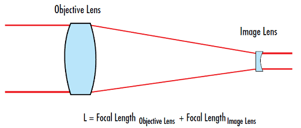

望远镜原理
分为开普勒式和伽利略式

上面是开普勒，Objective Lens 是离物体的，Image Lens 是人眼看的。其实就是用了凸透镜原理，下图是伽利略式

比较
天文上基本用开普勒，另外一种即伽利略式通常都是用在便携简单看看的程度的场景上（比如戏剧之类）的。开普勒望远镜之所以成像质量更好，主要得益于其拥有一个真实的中间实像平面。这个关键设计带来了多重优势，使得它在像差校正、功能扩展和光学性能上都远超伽利略式望远镜。
以下是具体原因分析：
1. 核心优势：存在实像面，允许放置“光阑”和“场镜”
这是所有优势的根源。在开普勒望远镜中，物镜在其焦平面附近成一个实像。
- 可安装分划板：这个实像面可以精确地放置一块刻有十字线或刻度（分划板）的玻璃片。观察者看到的星点和分划线在同一平面上，因此没有视差，可以进行精确的瞄准和测量（如测量天体角距）。伽利略望远镜没有实像面，无法实现这一点。
- 可设置视场光阑：可以在实像面位置设置一个孔径光阑，它像一个“窗口”，严格定义了望远镜的视野范围。视野外的杂散光被遮挡，使得视野边缘清晰、锐利。伽利略望远镜没有这个“硬边界”，视野边缘模糊且难以界定。
- 可加入场镜：为了进一步改善边缘像质和扩大视场，可以在实像面附近加入一块场镜（通常是平凸透镜），它能将边缘光线更好地引导向目镜，减少渐晕和像差。
2. 更优的像差校正能力
开普勒式的长镜筒（两凸透镜分离较远）为其校正像差提供了物理空间和设计自由度。
- 色差校正：两个凸透镜的组合，为设计消色差物镜（如采用燧石玻璃和冕牌玻璃组合的胶合透镜）提供了可能。通过不同材质透镜的配合，可以显著减少色差（不同颜色光聚焦点不同造成的彩色边缘）。伽利略式望远镜中，凹透镜加剧了色差，且结构紧凑，很难进行有效校正。
- 球差和彗差校正：物镜和目镜可以分别进行优化设计。现代目镜（如普罗素目镜、广角目镜）本身就是复杂的光学系统（多片透镜组合），专门用于校正球差、彗差、像散和场曲，从而在保证大视场的同时获得平坦、锐利的成像。这些复杂的目镜必须工作在开普勒结构（接收实像）中。
- 出瞳位置合理：开普勒望远镜的出射光瞳（眼睛接收光束的窗口）位于目镜后方一段距离，观测时眼睛可以舒适地放置。伽利略望远镜的出射光瞳在透镜之间，眼点位置非常局促，观测不舒服且容易看到视野边缘的切割。
3. 更大的视场和更高的实用倍率
- 视场：开普勒结构本身能提供更大的表观视场（眼睛看到的主观视野范围）。其视场角主要由目镜的焦距和设计决定，现代目镜可以达到80°甚至100°以上的超广角。伽利略望远镜的视场受限于凹透镜的口径和位置，通常很窄（很少超过30°），且边缘像质急剧恶化。
- 倍率：开普勒望远镜可以实现很高的倍率（数百倍甚至上千倍）而像质不致严重下降，这得益于其良好的像差校正能力。伽利略望远镜的倍率通常被限制在10倍以内，再提高会导致视野极小、像差极大，无法使用。
4. 光路设计的灵活性与扩展性
中间实像面是一个“光学工作台”，允许插入其他光学元件：
- 可安装滤镜：在天文观测中，可以在实像面处方便地安装窄带滤镜、月亮滤镜等，不影响光路。
- 可作为中继系统：开普勒结构本质上是“物镜+目镜”的无限远中继系统，是现代光学仪器的标准模块。它很容易与相机接口（将目镜取下，相机置于实像面处即可拍摄），或连接其他仪器（如光谱仪）。
总结对比
| 特性 | 开普勒望远镜 | 伽利略望远镜 |
|---|---|---|
| 核心结构 | 有实像面 | 无实像面 |
| 像差校正 | 优秀。可设计消色差物镜、使用复杂目镜，多种像差可系统校正。 | 较差。凹透镜加剧色差，结构紧凑，校正手段少。 |
| 视场与边缘 | 大且锐利。有视场光阑清晰界定，边缘像质可通过场镜优化。 | 小且模糊。无硬性光阑，边缘像差大，视野呈“钥匙孔”效应。 |
| 功能扩展 | 强大。可加分划板、滤镜，易连接相机，是模块化基础。 | 几乎无。结构封闭，无法插入元件。 |
| 实用倍率 | 高（可达上千倍） | 低（通常<10倍） |
总而言之，开普勒望远镜并非天生“完美”，而是它的结构（两个凸透镜产生实像）为后续的光学设计和性能提升打开了一扇大门。 它提供了一个可以“加工处理”的中间图像，从而允许工程师运用各种光学技术来修正缺陷、扩展功能，最终实现了远胜于伽利略式望远镜的成像质量。这正是它成为现代望远镜绝对主流设计的原因。